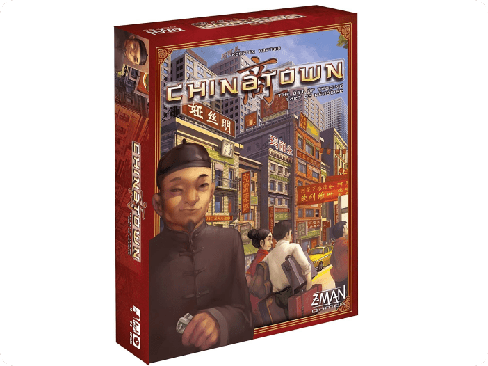

Camel Up ir aizraujoša kamieļu spēle, kurā spēlētāji veiks likmes uz pirmajiem kamieļiem, kas ieradīsies sacīkstēs. Kamēr kamieļi virzās uz priekšu, spēlētāji var izmantot dažādas drošas taktikas un likumīgas kustības, lai palielinātu iespējas izvēlēties pareizo kamieli.
Ķrāšņums
Splendor ir skaista dārglietu tirdzniecības spēle, kurā spēlētāji centīsies kļūt par veiksmīgāko un bagātāko tirgotāju. Šajā spēlē ir drošas, likumīgas darbības un cīņas par pirmajām vietām elementi. Spēlē Splendor spēlētājiem ir jāsavāc dārgakmeņu žetoni un jāiegādājas kārtis, kas attēlo dārgakmeņus un resursus. Spēles mērķis ir izveidot spēcīgu dārgakmeņu pili un kļūt par veiksmīgāko tirgotāju.

Ķīniešu kvartāls
Camel Up ir aizraujoša kamieļu spēle, kurā spēlētāji veiks likmes uz pirmajiem kamieļiem, kas ieradīsies sacīkstēs. Kamēr kamieļi virzās uz priekšu, spēlētāji var izmantot dažādas drošas taktikas un likumīgas kustības, lai palielinātu iespējas izvēlēties pareizo kamieli.
 Ķamielis augšā
Ķamielis augšā Ķrāšņums
Ķrāšņums